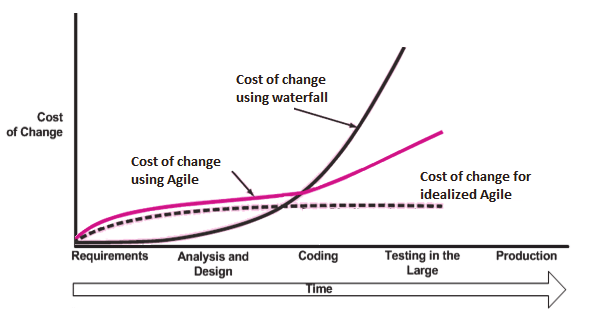

Cost of Changes
As the complexity of a given feature/change/product scales, the cost of change goes from being completely flat (that is, the same at any point in product lifecycle)...
Cost of Changes
...to an exponential curve more like this.
Okay, but Why?

The main culprit is in what software engineering academics call the feedback cycle: the length of time required to recognize a problem, loop in any necessary stakeholders and identify & apply a solution.
Wait,
I heard agile flattens this.
Plenty post-modern software engineering academics (Beck, Astels, other TDD & eXP proponents, etc.) would probably say so.
Wait,
I heard agile flattens this.
Plenty post-modern software engineering academics (Beck, Astels, other TDD & eXP proponents, etc.) would probably say so.
But they're writing about bureaucratically massive projects with many developers and product development lifecycles stretching out over years.
Wait,
I heard agile flattens this.

Agile methodologies reduce the average cost over time (flatter curve), but require more person-hours up front per project/product in keeping everyone on the same page.
Wait,
I heard agile flatten this.
Agile methodologies can reduce the average cost over time (flatter curve), but take more person-hours up front per project/product in keeping everyone on the same page.
Plus a schedule full of meetings to facilitate constantly iterating over things lowers the overall number of products that can be supported by smaller teams.
Wait,
I heard agile flatten this.
Plus a schedule full of meetings to facilitate constantly iterating over things lowers the overall number of products that can be supported by smaller teams.
For most 'simpler' projects where its conceivable